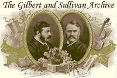

 |
|||||||
FROM THE LONDON EDITION.
The following is a summary of additional news which appeared in our London Edition of
Yesterday: –
| Major-General Stanley | Mr. C. H. Workman |
| The Pirate King | Mr. Henry A. Lytton |
| Samuel | Mr. Leo Sheffield |
| Frederic | Mr. Henry Herbert |
| Sergeant of Police | Mr. Rutland Barrington |
| Mabel | Miss Dorothy Court |
| Edith | Miss Jessie Rose |
| Kate | Miss Beatrice Boarer |
| Isabel | Miss Ethel Lewis |
| Ruth | Miss Louie René |
There is a chronological problem in the Pirates, revived by Mrs. D'Oyly Carte on Tuesday night, which requires solution. Frederic, at the commencement of the action, reaches the age of twenty-one and becomes a full-blown Pirate. The opera was produced at Paignton and New York in I879, and at the Opéra Comique in London in 1880. Therefore Frederic was born in 1858 or 1859. But we are told afterwards that he was born on February 29, and neither of those years is a leap year. He cannot have been born in 1860, or he would still remain a pirate apprentice; besides, we are told that, reckoning one birthday in every four years only, he would come of age in 1940. Therefore he was born in 1856. Therefore either Sir W. S. Gilbert wrote the book in 1877, which does not appear likely, on account of its relation to Pinafore, and forgot to point out the discrepancy, or the action must be supposed to take place in 1877. We must be forgiven for discussing the question with so much solemnity, for a Gilbert and Sullivan opera is, as the little boy said of the Mile-end-road in The Knight of the Burning Pestle, a "great matter."
The Pirates has not enjoyed such frequent revival as some of its companions, but it does not deserve it any less. It is an almost unique instance of a sequel which is practically as good as its original. It is clearly modelled throughout on Pinafore, which it succeeded, and its verse and tunes are quite worthy of that immortal work. Probably nothing of its kind is better than Mabel's waltz song, which formerly enjoyed a considerable vogue on the Continent. We once heard it imported into a performance of the Vogelhändler, and we recollect how it set off the tawdriness of that composition. One feels more grateful than ever that Sullivan paid no attention to the people who wanted him to go on writing second-rate oratorios when he was capable of first-rate comic operas.
The performance on Tuesday night was of admirable vigour and thoroughness. The company seems to have shaken off the listlessness that it sometimes showed in Iolanthe. Mr. Barrington, as usual, is inimitable, and we have little but praise for most of his supporters. Miss Dorothy Court seemed to be somewhat overburdened with the exacting part of Mabel, but as this was more apparent at the beginning of the evening, perhaps it was due in the main to the nervousness of a first appearance. The opera was received with even more than the usual enthusiasm of a Savoy first-night audience.
We note that "Mauser" has taken the place of " chassepôt," and "Good King Edward" of "Queen Victoria” with consequential alterations; but was it necessary to substitute "Right oh!” for "Very well"?
Mrs. D'Oyly Carte writes from the. Savoy Theatre:– "As some misapprehension has apparently been caused by the statement that I do not purpose playing opera at the Savoy Theatre after my present season, will you allow me to say that I am continuing my opera business in the provinces as usual?"
Page modified 20 August 2011